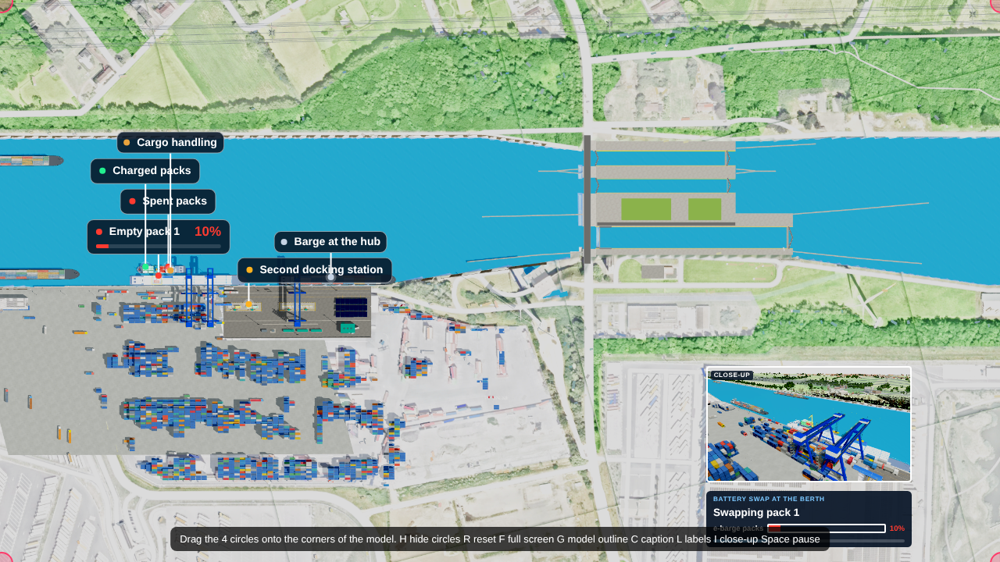
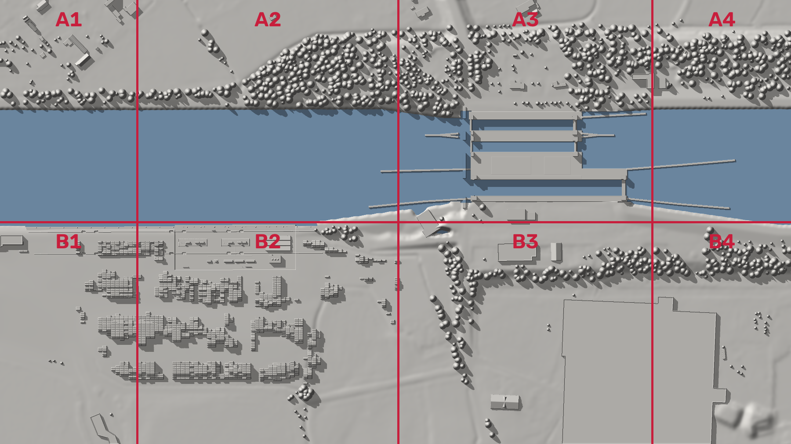
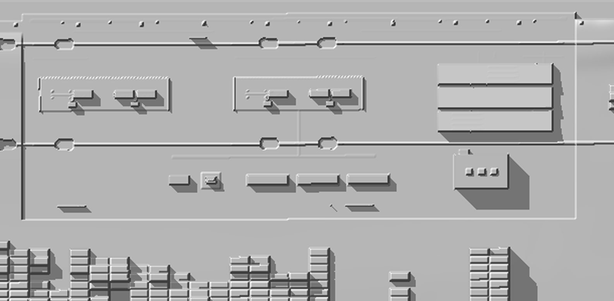
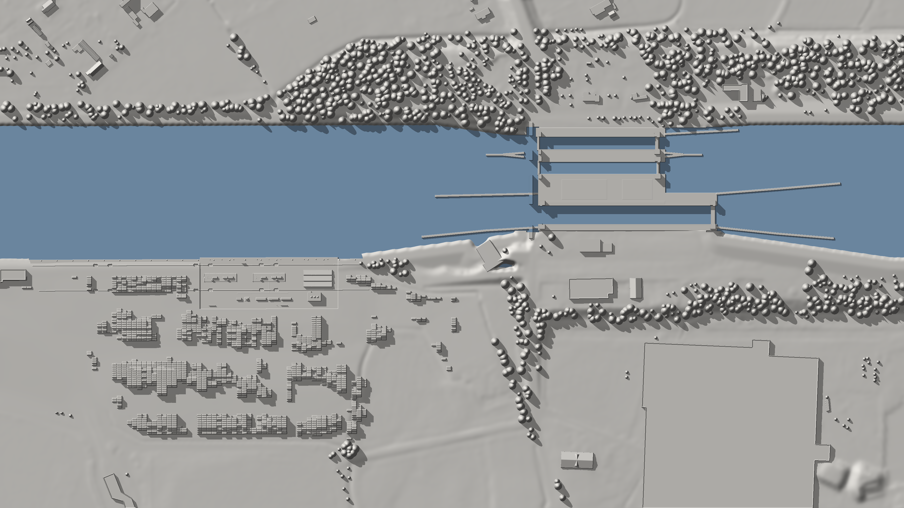

Albert Canal port model
BCTN Meerhout quay, the battery swapping station and Kwaadmechelen lock. A 3D printed model at 1:1600 with the animation projected onto it from above.
Start the projection Berth story only Lock story only
The picture shows the whole port from straight above at the scale of the model, with labels on the vessels and battery packs. The close-up 3D camera and the story caption land on the flat warehouse roof, which works as a small screen.
How to project
- Open this page on the laptop connected to the projector and press Start the projection.
- Press F for full screen.
- Drag the four pink circles onto the four corners of the printed model.
- Press H to hide the circles. The position is remembered on that laptop.
- G shows the outline of the printed model so you can check the fit.
- C hides the caption, L the labels, I the close-up screen. Space pauses. R resets the corners.
Print files (Bambu Lab P2S)
Eight tiles and the cranes. Print the cranes and tile B2 first. Settings are in the instructions file.
tile_B2.3mfSwap station, quay, containers
tile_B1.3mfQuay west, containers
tile_B3.3mfSouth bank at the lock
tile_B4.3mfSouth bank, upper reach
tile_A1.3mfCanal west
tile_A2.3mfCanal in front of the quay
tile_A3.3mfLock and road bridge
tile_A4.3mfUpper reach
cranes_x3.3mfThree gantry cranes
README.txtPrint settings and assembly
Where each tile goes

Details

The battery swapping station on tile B2.

The whole model from above, 720 by 405 mm.
Orthofoto 2024 and DHM Vlaanderen II © Digitaal Vlaanderen. Map data © OpenStreetMap contributors.